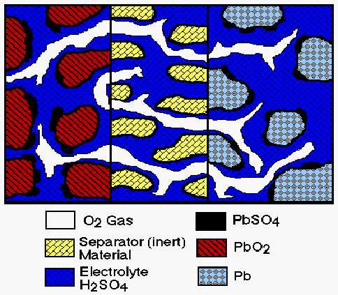
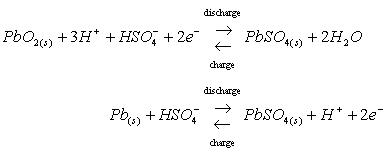
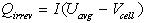
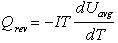

Fundamental Lead Acid Battery Model
A fundamental lead acid battery model was developed for NREL by John
Harb (Professor of Chemical Engineering) at Brigham Young University.
The model is based on the physical and chemical processes that occur during
both discharge and charge, and includes performance/material property variation
with temperature.
To run the model, select ESS_PB16_fund_optima or ESS_PB16_fund_generic from the Energy Storage options in ADVISOR's first Vehicle Input Screen. These options refer to the two versions of the model that are included in ADVISOR: one with parameters from Optima's spiral wound lead acid battery (proprietary values are compiled in the fortran-based executable) and the second with generic lead acid parameters. This second version has more user-definable input parameters. To see a list of the variables in the models, look at the two m files. ADVISOR will automatically create a new block diagram (e.g. BD_SER_fund) with the new ESS model and ask the user if he wants to save it after running the simulation.
Model Details
The details presented below were taken from the report "Development
and Integration of a Fundamentally Based Battery Model for Low-Emission
Vehicle Simulations," John N. Harb, June 1999.
Figure 1 is a schematic diagram that illustrates the key features of the one-dimensional model used in this study. The figure shows a unit cell which extends from the center of one electrode to that of the opposite (facing) electrode.

Figure 1. Schematic diagram of cell used in fundamental model
The principal reactions at the positive electrode and negative electrodes were as follows:

During charge, both oxygen evolution at the positive electrode and hydrogen evolution at the negative electrode were included in the model. Oxygen recombination at the negative electrode was also included in an approximate way. No attempt was made to model the pressure build-up or mass transfer of gas in the cell. It was believed that the simulation of multiple charge/discharge cycles and the presence of a pressure relief valve in real systems would make detailed tracking of gas compositions and recombination rates difficult. Also, there is still debate in the literature as to what the controlling mechanisms are. Therefore, the present model simply integrated the amount of oxygen evolved in the positive electrode during the previous time step and allowed a specified fraction of that oxygen to recombine at the negative electrode. The recombination was assumed to occur quickly in the outermost computational cell of the negative electrode (closest to the separator). The amount that recombines is also arbitrarily constrained to change by no more than 10% of the total oxygen evolved during the previous time step.
Because the system consisted of three coexistent phases (gas, liquid, and solid), the convective terms that are important in flooded lead-acid cells were not included. In other words, the liquid did not flow due to squeezing out by the solid phase or due to volume changes in the liquid resulting from the reactions at the two electrodes. It was envisioned, however, that the liquid and gas phases would redistribute due to wicking or capillary forces. Mechanistic modeling of such forces was beyond the scope of the present work and inconsistent with the level of assumptions made elsewhere in the model. Consequently, as a first approximation, it was assumed that capillary forces would lead to a volume ratio of gas to liquid that was approximately constant. The volume fraction of liquid was assumed to be constant across the separator, and was updated after each time step based on an overall acid balance.
The equation used are based on the macroscopic description of porous electrodes and use concentrated solution theory to characterize species transport in the electrolyte (20,21). The reversible lead electrode was used as a reference electrode for the solution potential. Activity coefficients (as a function of acid concentration) were approximated by fitting data (22) to a polynomial expression over the range of concentrations from approximately 0.05M to 8M sulfuric acid. The partial molar volumes of electrolyte species were assumed to be constant. The expressions used to describe the reaction rates accounted for mass transfer limitations due to dissolution of Pb+2 (18,23). Finally, the matrix potential (potential of the solid phase) was assumed to be constant over the thickness of each electrode (i.e. in the radial direction). Calculations showed that the matrix potential changed very little relative to the change in the solution potential across the electrode. This assumption allowed elimination of an equation and hence simplified and increased the efficiency of the calculations. A detailed listing of the model equations for the negative electrode only are listed below, in an effort to keep this document as short as possible. A similar set of equations was used for the positive electrode. The equations in the separator were the same as those of Bernardi and Carpenter (17). In addition, an overall volume balance for the electrolyte was used to determine the liquid volume fraction in the separator.
Heat Generation Rates
Heat generation rates due to irreversible losses were calculated for
the battery. These losses include Joule heating in the electrolyte and
energy dissipated in electrode overpotentials, and were determined from
the following relationship:

where Qirrev (W) is the heat due to irreversibilities, I is the cell current (A) associated with reactions shown in equations 1 and 2, Vcell is the cell voltage, and Uavg is the theoretical open-circuit potential evaluated at the average concentration. The current, I, is positive during discharge and negative during charge.
There is also a reversible heat term which is associated with the change in entropy during charge and discharge of the cell. This term is evaluated as follows:

where Qrev (W) is the reversible heat, T is the temperature (K), and dUavg/dT is the derivative of the open circuit potential with respect to temperature. dUavg/dT was assumed to be constant and was approximated as 2 x 10-4 V/K from the data of Bode (1977).
SOC
The State of Charge of the battery was found by tracking the amount
of charge associated with the conversion fo Pb to PbSO4 in the
negative electrode and PbO2 to PbSO4 in the positive
electrode. This amount of charge was used with a user capacity to
approximate the SOC for each electrode:
SOC= (Specified Capacity - Charge removed from Electrode)/Specified Capacity
Since one of the electrodes is often limiting, the minimum value of the SOC calculated for the two electrodes was reported as the SOC.
References:
17. D.M. Bernardi and M.K. Carpenter, J. Electrochem. Soc., 142, 2631
(1996).
18. J. Newman and W. Tiedemann, J. Electrochem. Soc., 144, 3081 (1997).
19. SIMULINK (Version 2) and MATLAB (Version 5.2), The Math Works,
Inc., 1998.
20. J. Newman and W. Tiedemann, AIChE Journal, 21, 25 (1975).
21. J. Newman, Electrochemical Systems, 2nd Ed., Prentice-Hall, Princeton,
NJ (1991).
22. H. Bode, Lead Acid Batteries, Wiley and Sons, New York, NY (1977).
23. J.S. Dunning, D.N. Bennion, and J. Newman, J. Electrochem. Soc.,
118, 1251 (1971).
Neural Network Model for the Hawker
Genesis Lead Acid
A neural network battery model was developed for NREL by S. R. Bhatikar
and R. L. Mahajan at the University of Colorado. The model was created
by using power, voltage, current, and SOC data from a Hawker Genesis Lead
Acid battery by running a 12V battery over a power cycle derived from a
US06 drive cycle.
In their most basic form, neural networks are hyper-dimensional curve fits for nonlinear data. Research on mathematical models describing the functionality of the human brain led to the development of the basic theory for these networks. An additional caveat of these networks is the ability to modify themselves to a changing input output relationship. This modification is called learning. Since neural networks are in essence nonlinear curve fits they can be used to reproduce data in real time.
To run the model, select ESS_PB12_nnet from the Energy Storage options in ADVISOR's first Vehicle Input Screen. ADVISOR will automatically create a new block diagram (e.g. BD_SER_nnet) with the new ESS model and ask the user if he wants to save it after running the simulation.
Neural networks are only as good as the data they are trained on, therefore the use of the battery model should be restricted. The training data ranges were as follows:
SOC ranged from 0.27 to 0.74
Power ranged from 1200 W discharge to 750 W charge
Output Current ranged from 85 A discharge to 79 A charge
Output Voltage ranged from 9.5 V to 16.9 V
The model does not include variation with temperature as data was unavailable for training over a significant range of temperatures.
Last Revised: 5/29/01: vhj